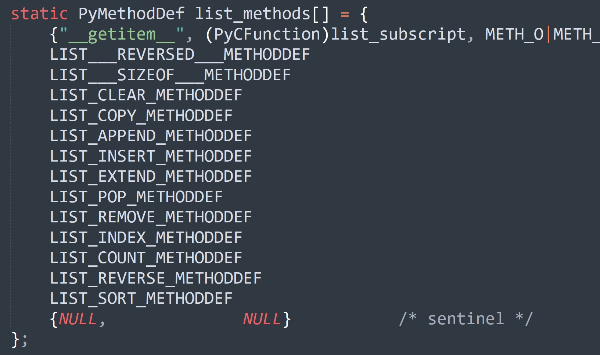
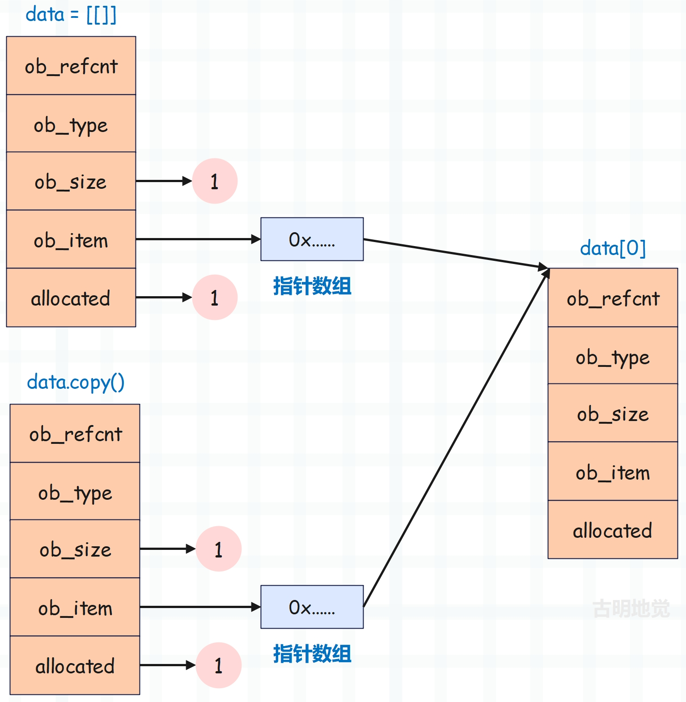

楔子
上一篇文章我们介绍了列表作为序列型对象支持的方法，但列表还有很多的自定义方法。作为一名优秀的 Python 工程师，我们必须要知道这些方法的实现过程，以及相应的时间复杂度。
实例对象能够调用的方法都定义在类型对象中，类型对象无一例外都是 PyTypeObject 结构体实例，该结构体有一个 tp_methods 字段，负责维护实例对象能够调用的方法。由于 tp_methods 指向 PyMethodDef 结构体类型的数组，所以一个 PyMethodDef 结构体实例，就是 Python 实例对象能够调用的一个方法。
// Include/methodobject.h
struct PyMethodDef {
// 暴露给 Python 的方法名
const char *ml_name;
// 承载了具体逻辑的 C 函数
PyCFunction ml_meth;
// 指示函数的调用方式和传递参数的方式，比如
/* METH_NOARGS: 表示函数不接收任何参数
* METH_O: 函数只接收一个参数
* METH_VARARGS: 函数支持以元组的形式接收多个位置参数
* METH_KEYWORDS: 函数支持关键字参数
* METH_CLASS: 函数是一个类方法，等价于 Python 里的 @classmethod
* METH_STATIC: 函数是一个静态方法，即 @staticmethod
* METH_FASTCALL: 函数使用优化的快速调用协议，Python 3.7 及以上版本可用
传递参数时使用 C 数组，而不是 Python 元组
* METH_COEXIST: 如果希望存在两个同名函数，但类和实例分别调用不同的函数
那么便可以指定 METH_COEXIST
*/
int ml_flags;
// 函数的 docstring
const char *ml_doc;
};
而 list 在底层对应 PyList_Type，它的 tp_methods 字段被赋值为 list_methods。

里面定义了列表可以调用的方法，相信当你以后想查看某个对象的方法的底层实现时，已经知道该怎么定位了，下面我们就来看看这些方法的实现过程。
append：在尾部追加元素
append 方法可以往列表尾部追加元素。
// Objects/clinic/listobject.c.h
#define LIST_APPEND_METHODDEF \
{"append", (PyCFunction)list_append, METH_O, list_append__doc__},
它由 list_append 函数实现。
// Objects/listobject.c
static PyObject *
list_append(PyListObject *self, PyObject *object)
{
// 调用 app1 添加元素，并返回 None
if (app1(self, object) == 0)
Py_RETURN_NONE;
return NULL;
}
static int
app1(PyListObject *self, PyObject *v)
{
// 获取当前列表的长度
Py_ssize_t n = PyList_GET_SIZE(self);
assert (v != NULL);
if (n == PY_SSIZE_T_MAX) {
PyErr_SetString(PyExc_OverflowError,
"cannot add more objects to list");
return -1;
}
// 追加元素之后 ob_size 会变成 n + 1
// 调用 list_resize 函数，判断 n + 1 和容量之间的关系
// 只要涉及到列表元素个数的改变，都要调用 list_resize 函数
if (list_resize(self, n+1) < 0)
return -1;
// 增加引用计数
Py_INCREF(v);
// 将元素设置在索引为 n 的位置
PyList_SET_ITEM(self, n, v);
return 0;
}
所谓往尾部追加元素，本质上就是将元素设置在索引为 len 的位置。
insert：在任意位置插入元素
接下来是列表的 insert 方法。
// Objects/clinic/listobject.c.h
#define LIST_INSERT_METHODDEF \
{"insert", (PyCFunction)(void(*)(void))list_insert, METH_FASTCALL, list_insert__doc__},
它由 list_insert 函数负责实现。
// Objects/clinic/listobject.c.h
static PyObject *
list_insert(PyListObject *self, PyObject *const *args, Py_ssize_t nargs)
{
// 函数的返回值，但只会返回 None
PyObject *return_value = NULL;
// 插入的位置
Py_ssize_t index;
// 插入的元素
PyObject *object;
// insert 方法精确接收两个参数
if (!_PyArg_CheckPositional("insert", nargs, 2, 2)) {
goto exit;
}
if (PyFloat_Check(args[0])) {
PyErr_SetString(PyExc_TypeError,
"integer argument expected, got float" );
goto exit;
}
{
// 参数 args 是一个元组，里面包含了插入位置和元素
Py_ssize_t ival = -1;
// 插入位置，对象必须实现 __index__
PyObject *iobj = PyNumber_Index(args[0]);
if (iobj != NULL) {
// 转成 Py_ssize_t
ival = PyLong_AsSsize_t(iobj);
Py_DECREF(iobj);
}
if (ival == -1 && PyErr_Occurred()) {
goto exit;
}
// 赋值给 index
index = ival;
}
// 拿到待插入的元素
object = args[1];
// 调用 list_insert_impl 执行元素插入逻辑
return_value = list_insert_impl(self, index, object);
exit:
// 虽然这里返回了 return_value，但我们知道 insert 方法是没有返回值的
// 或者说返回值为 None，所以上面的 list_insert_impl 一定返回了 None
return return_value;
}
// Objects/listobject.c
static PyObject *
list_insert_impl(PyListObject *self, Py_ssize_t index, PyObject *object)
{
// 调用 ins1 插入元素，插入成功之后返回 None
if (ins1(self, index, object) == 0)
Py_RETURN_NONE;
return NULL;
}
static int
ins1(PyListObject *self, Py_ssize_t where, PyObject *v)
{
// 初始化循环变量 i，n 为列表长度
Py_ssize_t i, n = Py_SIZE(self);
// 指向 ob_item 数组的首元素
PyObject **items;
if (v == NULL) {
PyErr_BadInternalCall();
return -1;
}
if (n == PY_SSIZE_T_MAX) {
PyErr_SetString(PyExc_OverflowError,
"cannot add more objects to list");
return -1;
}
// 只要涉及到元素个数的改变，比如添加和删除元素
// 都会先调用 list_resize，在里面检测一下容量
// 比如这里，如果发现 (容量 >= n + 1) && (容量 / 2 <= n + 1)
// 那么说明容量目前是合理的，不需要做任何的扩容或缩容操作（如果条件不满足则需要）
// 然后将列表的 ob_size 修改为 n + 1，直接返回
if (list_resize(self, n+1) < 0)
return -1;
// 判断插入位置，如果 where 小于 0，那么加上列表长度
if (where < 0) {
where += n;
// 加上列表长度之后如果还小于 0，那么让其等于 0
if (where < 0)
where = 0;
}
// 如果插入位置大于列表长度 n，那么让其等于 n，此时相当于 append
if (where > n)
where = n;
items = self->ob_item;
// 将 where 以及之后的元素依次向右移动一个位置
for (i = n; --i >= where; )
items[i+1] = items[i];
// 将待插入元素 v 的引用计数加 1，并设置在底层数组中索引为 where 的位置
Py_INCREF(v);
items[where] = v;
return 0;
}
以上就是 insert 函数的底层逻辑，列表在插入数据的时候是非常灵活的，不管你在什么位置插入，都是合法的。它会自己调整，在确定待插入位置 where 之后，会将 where 以及之后的所有元素都向后挪动一个位置，空出来的地方设置为待插入的值。
另外我们看到 append 和 insert 其实非常像，都是基于索引设置元素。只不过对于 append 来说，索引就是列表长度，而对于 insert 来说，索引是由外界指定的，但函数内部会进行边界调整。
并且由于 insert 会涉及元素的移动，所以它的时间复杂度是 O(n)，而 append 则不会，它的时间复杂度是 O(1)。当然在极端情况下（发生扩容），append 也会退化成 O(n)，只不过这个过程不会频繁发生，所以 append 的复杂度仍然是 O(1) 的。
pop：从尾部弹出一个元素
pop 默认会从尾部弹出一个元素，当然我们也可以指定索引，弹出指定索引对应的元素。如果不指定索引，那么默认是 -1。
// Objects/clinic/listobject.c.h
#define LIST_POP_METHODDEF \
{"pop", (PyCFunction)(void(*)(void))list_pop, METH_FASTCALL, list_pop__doc__},
它由 list_pop 函数负责实现。
// Objects/clinic/listobject.c.h
static PyObject *
list_pop(PyListObject *self, PyObject *const *args, Py_ssize_t nargs)
{
// 返回值
PyObject *return_value = NULL;
Py_ssize_t index = -1;
// pop 接收 0 ~ 1 个参数
if (!_PyArg_CheckPositional("pop", nargs, 0, 1)) {
goto exit;
}
// 如果参数个数小于 1，说白了就是没有传参，直接跳转到 skip_optional 标签
if (nargs < 1) {
goto skip_optional;
}
if (PyFloat_Check(args[0])) {
PyErr_SetString(PyExc_TypeError,
"integer argument expected, got float" );
goto exit;
}
{
// 如果传参了，那么拿到指定的索引
Py_ssize_t ival = -1;
PyObject *iobj = PyNumber_Index(args[0]);
if (iobj != NULL) {
ival = PyLong_AsSsize_t(iobj);
Py_DECREF(iobj);
}
if (ival == -1 && PyErr_Occurred()) {
goto exit;
}
index = ival;
}
skip_optional:
// 将列表和 index 作为参数传进去，如果不指定索引，那么 index 默认为 -1
return_value = list_pop_impl(self, index);
exit:
// 返回弹出的元素
return return_value;
}
// Objects/listobject.c
static PyObject *
list_pop_impl(PyListObject *self, Py_ssize_t index)
{
PyObject *v;
int status;
// 如果列表为空，那么抛出 IndexError: pop from empty list
if (Py_SIZE(self) == 0) {
PyErr_SetString(PyExc_IndexError, "pop from empty list");
return NULL;
}
// 如果 index 小于 0，那么加上列表长度
if (index < 0)
index += Py_SIZE(self);
// 检测索引是否合法，如果索引小于 0 或大于等于列表长度
// 那么抛出 IndexError: pop index out of range
if (!valid_index(index, Py_SIZE(self))) {
PyErr_SetString(PyExc_IndexError, "pop index out of range");
return NULL;
}
// 拿到索引为 index 的元素，这也是一会儿要返回的元素
v = self->ob_item[index];
// 快分支，如果 index == Py_SIZE(self) - 1，证明弹出的是列表的最后一个元素
// 那么说明不涉及元素的移动，直接更新 ob_size 即可
if (index == Py_SIZE(self) - 1) {
status = list_resize(self, Py_SIZE(self) - 1);
if (status >= 0)
return v;
else
return NULL;
}
Py_INCREF(v);
// 删除的不是最后一个元素，那么需要调用 list_ass_slice 进行删除
// 等价于 self[index: index + 1] = []，即删除索引为 index 的元素
status = list_ass_slice(self, index, index+1, (PyObject *)NULL);
if (status < 0) {
Py_DECREF(v);
return NULL;
}
return v;
}
以上就是 pop 方法。
index：查询元素首次出现的位置
index 方法可以接收一个元素，然后返回该元素首次出现的位置。当然还可以额外指定一个 start 和 end，表示查询的范围。
// Objects/clinic/listobject.c.h
#define LIST_INDEX_METHODDEF \
{"index", (PyCFunction)(void(*)(void))list_index, METH_FASTCALL, list_index__doc__},
它由 list_index 负责实现。
// Objects/clinic/listobject.c.h
static PyObject *
list_index(PyListObject *self, PyObject *const *args, Py_ssize_t nargs)
{
PyObject *return_value = NULL;
PyObject *value;
Py_ssize_t start = 0;
Py_ssize_t stop = PY_SSIZE_T_MAX;
// index 方法接收 1 ~ 3 个参数
if (!_PyArg_CheckPositional("index", nargs, 1, 3)) {
goto exit;
}
// args[0] 表示查找的元素
value = args[0];
if (nargs < 2) {
goto skip_optional;
}
// args[1] 表示查找的起始位置
if (!_PyEval_SliceIndexNotNone(args[1], &start)) {
goto exit;
}
if (nargs < 3) {
goto skip_optional;
}
// args[2] 表示查找的结束位置
if (!_PyEval_SliceIndexNotNone(args[2], &stop)) {
goto exit;
}
skip_optional:
// 调用 list_index_impl 查找元素
return_value = list_index_impl(self, value, start, stop);
exit:
// 返回
return return_value;
}
// Objects/listobject.c
static PyObject *
list_index_impl(PyListObject *self, PyObject *value, Py_ssize_t start,
Py_ssize_t stop)
{
Py_ssize_t i;
// 如果 start 小于 0，那么加上列表长度
if (start < 0) {
start += Py_SIZE(self);
// 如果相加之后还小于 0，那么等于 0
if (start < 0)
start = 0;
}
// 如果结束位置小于 0，那么加上列表长度，所以它们都支持负数索引
if (stop < 0) {
stop += Py_SIZE(self);
// 如果相加之后还小于 0，那么等于 0
if (stop < 0)
stop = 0;
}
// 从 start 开始遍历
for (i = start; i < stop && i < Py_SIZE(self); i++) {
// 获取对应元素
PyObject *obj = self->ob_item[i];
Py_INCREF(obj);
// 然后进行比较，这个函数我们之前说过
// 它会先比较地址是否相同，如果地址相同，那么直接判定为相等
// 如果地址不同，那么比较值是否相等
int cmp = PyObject_RichCompareBool(obj, value, Py_EQ);
Py_DECREF(obj);
// 相等返回 1，不相等返回 0，比较失败返回 -1
// 如果 cmp 大于 0，表示两者相等，返回索引
if (cmp > 0)
return PyLong_FromSsize_t(i);
else if (cmp < 0)
return NULL;
}
// 到这里说明元素不存在，那么抛出 ValueError: x is not in list
PyErr_Format(PyExc_ValueError, "%R is not in list", value);
return NULL;
}
所以列表 index 方法的时间复杂度为 O(n)，因为它在底层要循环整个列表，如果运气好，可能第一个元素就是；运气不好，就只能循环整个列表了。
然后需要注意的是，在比较的时候，会先判断地址是否相同，然后再比较值是否相等。
class A:
def __eq__(self, other):
return False
a = A()
data = [a]
print(a == data[0]) # False
print(data.index(a)) # 0
a 和 data[0] 指向的对象不相等，但 data.index(a) 却返回了相应的索引，因为两者保存的地址是相同的。
同理 if v in data 这种也是类似的，先比较地址，地址不同再比较维护的值。
count：查询元素出现的次数
列表有一个 count 方法，可以计算出某个元素出现的次数。
// Objects/clinic/listobject.c.h
#define LIST_COUNT_METHODDEF \
{"count", (PyCFunction)list_count, METH_O, list_count__doc__},
它由 list_count 函数负责实现。
// Objects/listobject.c
static PyObject *
list_count(PyListObject *self, PyObject *value)
{
Py_ssize_t count = 0;
Py_ssize_t i;
// 遍历每一个元素
for (i = 0; i < Py_SIZE(self); i++) {
// 如果地址相同，直接判定为相等，count 自增 1
PyObject *obj = self->ob_item[i];
if (obj == value) {
count++;
continue;
}
Py_INCREF(obj);
// 地址不同（a is b 不成立），则比较维护的值是否相等（看 a == b 是否成立）
int cmp = PyObject_RichCompareBool(obj, value, Py_EQ);
Py_DECREF(obj);
if (cmp > 0)
count++;
else if (cmp < 0)
return NULL;
}
// 返回元素出现的次数
return PyLong_FromSsize_t(count);
}
毫无疑问，count 方法无论在什么情况下，它都是一个时间复杂度为 O(n) 的操作，因为列表必须要从头遍历到尾。
但还是要注意里面判断相等的方式，因为变量只是一个指针，所以 C 的 == 相当于 Python 的 is，但 Python 的 == 则对应 PyObject_RichCompare 函数。而源码里面在比较的时候先执行 ==，所以会先判断两者是不是指向同一个对象。
class A:
def __eq__(self, other):
return False
a = A()
data = [a, a, a]
print(data[0] == a) # False
print(data[1] == a) # False
print(data[2] == a) # False
print(data.count(a)) # 3
我们看到列表里的三个元素和 a 都不相等，但计算数量的时候，结果是 3。原因就是比较的时候是先比较地址，如果地址一样，那么认为元素相同。
当然 PyObject_RichCompareBool 函数里面已经包含了比较地址的逻辑，该函数会先比较地址是否一样，如果一样则认为相等，不一样再比较对象维护的值是否相等。但在 count 方法里面，将比较地址的逻辑又单独拿了出来，可以理解为快分支。当然即遍没有也无所谓，因为在函数 PyObject_RichCompareBool 里面还是会先对地址进行比较。
remove：删除指定元素
除了根据索引删除元素之外，也可以根据值来删除元素，会删除第一个出现的元素。
// Objects/clinic/listobject.c.h
#define LIST_REMOVE_METHODDEF \
{"remove", (PyCFunction)list_remove, METH_O, list_remove__doc__},
它由 list_remove 函数实现。
// Objects/listobject.c
static PyObject *
list_remove(PyListObject *self, PyObject *value)
{
Py_ssize_t i;
// 遍历每一个元素
for (i = 0; i < Py_SIZE(self); i++) {
PyObject *obj = self->ob_item[i];
Py_INCREF(obj);
// 比较是否相等，如果地址相同，那么认为相等
int cmp = PyObject_RichCompareBool(obj, value, Py_EQ);
Py_DECREF(obj);
// 如果相等，那么进行删除
if (cmp > 0) {
// 可以看到在删除元素的时候，调用了 list_ass_slice
// 等价于 self[i: i + 1] = []
if (list_ass_slice(self, i, i+1,
(PyObject *)NULL) == 0)
Py_RETURN_NONE;
return NULL;
}
else if (cmp < 0)
return NULL;
}
// 否则说明元素不在列表中，抛出 ValueError: list.remove(x): x not in list
PyErr_SetString(PyExc_ValueError, "list.remove(x): x not in list");
return NULL;
}
以上就是 remove 函数的底层实现，说白了就是一层 for 循环，依次比较列表的每个元素和待删除元素是否相等。如果出现了相等的元素，则删除，然后直接返回，因为只删除一个；但如果整个循环遍历结束也没有发现满足条件的元素，那么报错，待删除元素不存在。
所以背后的逻辑并没有我们想象中的那么神秘。
reverse：翻转列表
如果是你的话，你会怎么对列表进行翻转呢？显然是采用双指针，头指针指向列表的第一个元素，尾指针指向列表的最后一个元素，然后两两交换。交换完毕之后，头指针后移一位、尾指针前移一位，继续交换。当两个指针相遇时，停止交换，而 Python 底层也是这么做的。
// Objects/clinic/listobject.c.h
#define LIST_REVERSE_METHODDEF \
{"reverse", (PyCFunction)list_reverse, METH_NOARGS, list_reverse__doc__},
它由 list_reverse 负责实现。
// Objects/clinic/listobject.c.h
static PyObject *
list_reverse(PyListObject *self, PyObject *Py_UNUSED(ignored))
{
return list_reverse_impl(self);
}
// Objects/listobject.c
static PyObject *
list_reverse_impl(PyListObject *self)
{
// 如果列表长度不大于 1，那么什么也不做，直接返回 None 即可
if (Py_SIZE(self) > 1)
// 大于 1 的话，执行 reverse_slice，传递了两个参数
// 第一个参数是底层数组首元素的地址
// 而第二个参数则是底层数组中索引为 ob_size 的元素的地址
// 但很明显能访问的最大索引应该是 ob_size - 1 才对啊
// 别急，我们继续往下看，看一下 reverse_slice 函数的实现
reverse_slice(self->ob_item, self->ob_item + Py_SIZE(self));
Py_RETURN_NONE;
}
static void
reverse_slice(PyObject **lo, PyObject **hi)
{
assert(lo && hi);
// 我们看到又执行了一次 --hi
// 让二级指针 hi 指向了索引为 ob_size - 1 的元素
--hi;
// 数组元素的地址，从左往右是依次增大的
// 如果 lo < hi，证明 lo 依旧在 hi 的左边，那么交换指向的元素
// 如果 lo > hi，证明两者相遇了，交换结束
while (lo < hi) {
// 交换指向的元素，下面三步等价于 *lo, *hi = *hi, *lo
// 但 C 不支持这么写，它需要借助一个中间变量
PyObject *t = *lo;
*lo = *hi;
*hi = t;
// 两个指针继续靠近，指向的元素继续交换，直到两个指针相遇
++lo;
--hi;
}
}
所以到现在，你还认为 Python 的列表神秘吗？虽然我们很难自己写出一个 Python 解释器，但是底层的一些思想其实并没有那么难，作为一名程序猿很容易想的到。
clear：清空列表
将列表中的元素全部清空，让列表回到初始状态。
// Objects/clinic/listobject.c.h
#define LIST_CLEAR_METHODDEF \
{"clear", (PyCFunction)list_clear, METH_NOARGS, list_clear__doc__},
它由 list_clear 负责实现。
// Objects/clinic/listobject.c.h
static PyObject *
list_clear(PyListObject *self, PyObject *Py_UNUSED(ignored))
{
return list_clear_impl(self);
}
// Objects/listobject.c
static PyObject *
list_clear_impl(PyListObject *self)
{
_list_clear(self);
Py_RETURN_NONE;
}
static int
_list_clear(PyListObject *a)
{
Py_ssize_t i;
PyObject **item = a->ob_item;
if (item != NULL) {
// 获取列表的长度
i = Py_SIZE(a);
// 将 ob_size 设置为 0
Py_SIZE(a) = 0;
// ob_item 设置为 NULL
a->ob_item = NULL;
// 将容量设置为 0
a->allocated = 0;
// 将列表中每个元素指向的对象的引用计数减 1
while (--i >= 0) {
Py_XDECREF(item[i]);
}
// 释放底层数组所占的内存
PyMem_FREE(item);
}
return 0;
}
过程非常简单，当列表为空时，除了将 ob_size 和 allocated 设置为 0 之外，还会将底层数组释放掉，减少内存占用。
copy：列表的拷贝
调用列表的 copy 方法，可以将列表拷贝一份。
// Objects/clinic/listobject.c.h
#define LIST_COPY_METHODDEF \
{"copy", (PyCFunction)list_copy, METH_NOARGS, list_copy__doc__},
它由 list_copy 负责实现。
// Objects/clinic/listobject.c.h
static PyObject *
list_copy(PyListObject *self, PyObject *Py_UNUSED(ignored))
{
return list_copy_impl(self);
}
// Objects/listobject.c
static PyObject *
list_copy_impl(PyListObject *self)
{
// 调用 list_slice，也就是基于切片获取元素
// 所以 data.copy() 等价于 data[:]
return list_slice(self, 0, Py_SIZE(self));
}
static PyObject *
list_slice(PyListObject *a, Py_ssize_t ilow, Py_ssize_t ihigh)
{
// 指向创建的新列表
PyListObject *np;
// 指向列表的底层数组的首元素
PyObject **src, **dest;
Py_ssize_t i, len;
// 创建的新列表的长度
len = ihigh - ilow;
// 创建底层数组长度为 len 的列表
np = (PyListObject *) list_new_prealloc(len);
if (np == NULL)
return NULL;
src = a->ob_item + ilow;
dest = np->ob_item;
// 将原始列表中的元素依次拷贝到新列表中
for (i = 0; i < len; i++) {
PyObject *v = src[i];
Py_INCREF(v);
dest[i] = v;
}
// 将新列表的 ob_size 设置为 len
Py_SIZE(np) = len;
// 转成泛型指针之后返回
return (PyObject *)np;
}
过程非常简单，但列表的 copy 方法或者说 data[:] 这种叫做列表的浅拷贝。关于列表的深浅拷贝也是初学者容易犯的错误之一，我们看一个 Python 的例子。
data = [[]]
# 默认是浅拷贝，这个过程会创建一个新列表
# 但我们说列表里面的元素都是指针，因此只会将里面的指针拷贝一份
# 而指针指向的内存并没有拷贝
data_cp = data.copy()
# 两个对象的地址是一样的
print(id(data[0]), id(data[0]))
"""
1338344668224 1338344668224
"""
# 操作 data[0], 会改变 data_cp[0]
data[0].append(123)
print(data, data_cp)
"""
[[123]] [[123]]
"""
# 操作 data_cp[0]，会改变 data[0]
data_cp[0].append(456)
print(data, data_cp)
"""
[[123, 456]] [[123, 456]]
"""
之所以会有这样的现象，是因为 Python 的变量、容器里面的元素都是泛型指针 PyObject *，在传递的时候会传递指针， 但是在操作的时候会操作指针指向的内存。所以 data.copy() 就是创建了一个新列表，然后把元素拷贝了过去，只不过元素都是指针。因为只是拷贝指针，没有拷贝指针指向的对象（内存），因此它们指向的是同一个对象。
但如果我们就想在拷贝指针的同时也拷贝指针指向的对象呢？答案是使用一个叫 copy 的模块。
import copy
data = [[]]
# 此时拷贝的时候，会把指针指向的对象也给拷贝一份
data_cp1 = copy.deepcopy(data)
data_cp2 = data[:]
data[0].append(123)
print(data_cp1) # [[]]
print(data_cp2) # [[123]]
# data[:] 这种方式也是浅拷贝，所以修改 data[0]，会影响 data_cp2[0]
# 但是没有影响 data_cp1[0]，证明它们是相互独立的，因为指向的是不同的对象
浅拷贝示意图如下：

里面的两个指针数组存储的元素是一样的，都是同一个对象的地址。
深拷贝示意图如下：

里面的两个指针数组存储的元素是不一样的，因为是不同对象的地址。
注意：copy.deepcopy 虽然在拷贝指针的同时会将指针指向的对象也拷贝一份，但这仅仅是针对可变对象，而不可变对象是不会拷贝的。
import copy
data = [[], "古明地觉"]
data_cp = copy.deepcopy(data)
print(data[0] is data_cp[0]) # False
print(data[1] is data_cp[1]) # True
为什么会这样，其实原因很简单。因为不可变对象是不支持本地修改的，你若想修改只能创建新的对象并指向它。但这对其它的变量而言则没有影响，其它变量该指向谁就还指向谁。
因为 b = a 只是将 a 存储的对象的指针拷贝一份给 b，然后 a 和 b 都指向了同一个对象，至于 a 和 b 本身则是没有任何关系的。如果此时 a 指向了新的对象，是完全不会影响 b 的，b 还是指向原来的对象。
因此，如果一个指针指向的对象不支持本地修改，那么深拷贝不会拷贝对象本身，因为指向的是不可变对象，所以不会有修改一个影响另一个的情况出现。
关于列表还有一些陷阱：
data = [[]] * 5
data[0].append(1)
print(data) # [[1], [1], [1], [1], [1]]
# 列表乘上一个 n，等于把列表里面的元素重复 n 次
# 但列表里面存储的是指针，也就是将指针重复 n 次
# 所以上面的列表里面的 5 个指针存储的地址是相同的
# 也就是说，它们都指向了同一个列表
# 这种方式创建的话，里面的指针都指向了不同的列表
data = [[], [], [], [], []]
data[0].append(1)
print(data) # [[1], [], [], [], []]
# 再比如字典，在后续系列中会说
d = dict.fromkeys([1, 2, 3, 4], [])
print(d) # {1: [], 2: [], 3: [], 4: []}
d[1].append(123)
print(d) # {1: [123], 2: [123], 3: [123], 4: [123]}
# 它们都指向了同一个列表
类似的陷阱还有很多，因此在工作中要注意，否则一不小心就会出现大问题。
总之记住三句话：
- 虽然 Python 一切皆对象，但我们拿到的其实是指向对象的指针；
- 变量在传递的时候本质上是将对象的指针拷贝一份，所以 Python 是变量的赋值传递、对象的引用传递；
- 操作变量（指针）的时候，会自动操作变量（指针）指向的内存。
小结
到此关于列表的内容就介绍完了，作为 Python 中的万能容器，我们可以自由地添加、修改和删除元素。但在使用的时候要了解它的底层结构以及元素是如何存储的，应该在什么场景下使用列表，它的每个方法的时间复杂度是多少。
下一篇文章来介绍元组，或许你觉得自己在代码中很少创建元组，但其实它无处不在。
欢迎大家关注我的公众号：古明地觉的编程教室。

如果觉得文章对你有所帮助，也可以请作者吃个馒头，Thanks♪(･ω･)ﾉ。